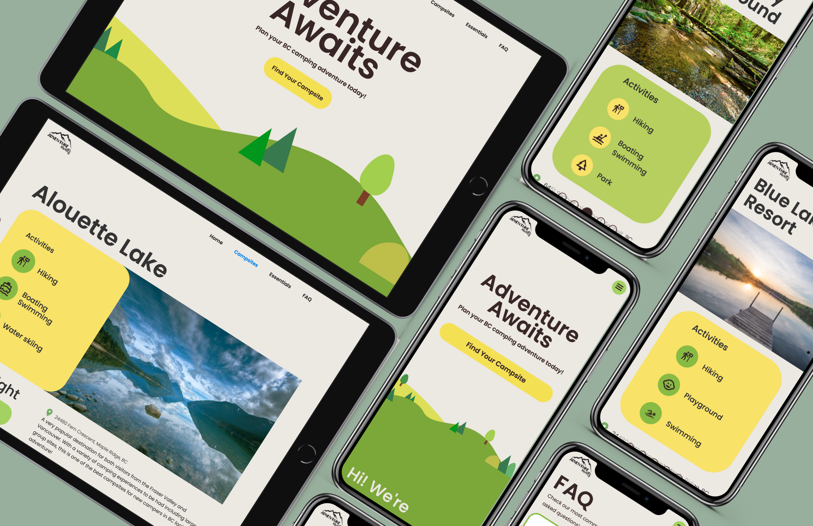
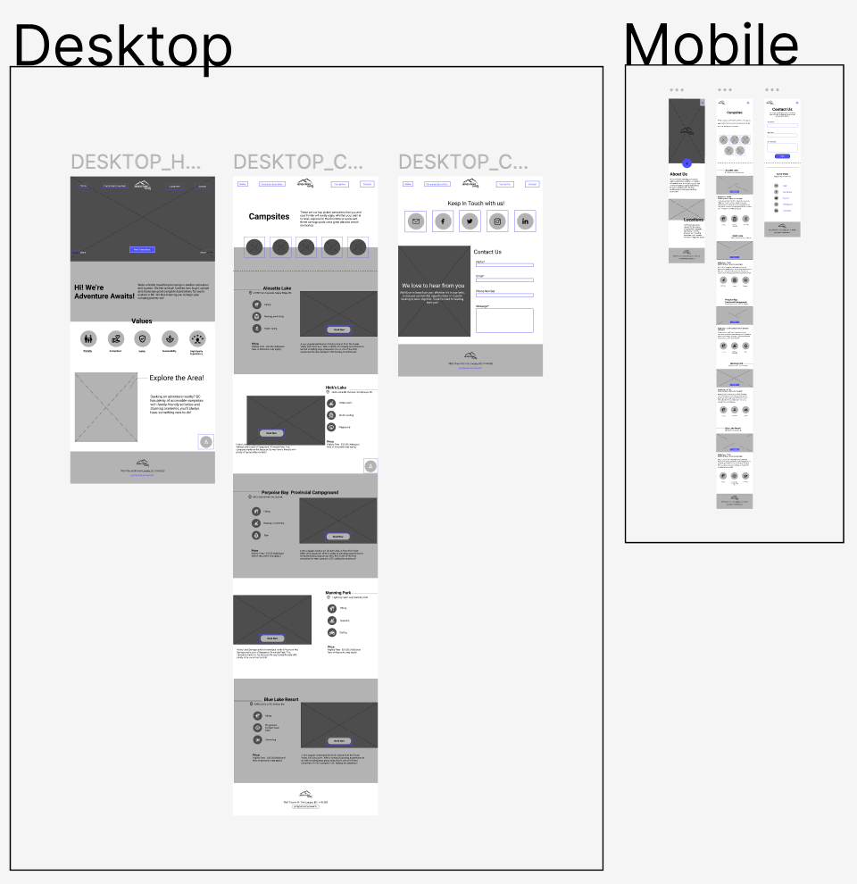

Adventure Awaits Camping Microsite
Click for shortened version Team
Calvin Alexan, Leanne Ngong, Jaival Shah & Michelle Wang
Tools
Figma, Webflow, HTML, Javascript, CSS
Role
Prototyper, Designer/ Developer
Category
UI, UX
Context
9 weeks, Summer 2022, Academic Project
Overview
Adventure Awaits is a blog dedicated to family travel, particularly outdoor education and tourism. The goal is to construct a standalone website that serves a specific purpose.
The objective is to select a client and develop content that caters to their target audience using Webflow, as well as familiarizing ourselves with HTML and CSS basics. Our team took on the role of web designers and built a microsite that educates families on how to enjoy the outdoors and highlights fantastic camping destinations in British Columbia.
Process
Initially, I engaged in a brainstorming session to identify potential clients, user groups, and content that could be matched together. Eventually, Adventure Awaits was chosen as the client and Beginner family campers in BC as the target user group. My team and I created a user persona to help us understand the user group's needs, goals, and pain points.

User Persona
My team and I collaborated in Figma to create two moodboards that visualized the desired art direction for the microsite. We each contributed 40 images to these boards and then developed two examples that aligned with each mood board, from which we chose the one that we believed best suited our user group – the fun and bright mood board.

Naturistic, decluttered and comforting moodboard
Fun, friendly and bright moodboard
We then created a site map to organize and lay out the microsite's content structure.

Site map
Next I created various versions of what each page may look like.
I worked with Calvin to produce medium-fidelity wireframes for both the mobile and desktop versions of the site to create a general layout that matched our chosen art direction. We used a grid system to ensure everything was properly aligned. Specifically, we used an 11-column grid for the desktop version and a 4-column grid for the mobile version. Throughout the design process, we kept usability in mind and ensured consistency with the moodboard. Finally, we used Webflow to build the microsite and create the end product. We made sure to incorporate features that improved user navigation, such as an interaction button that allowed for easy scrolling through campsite content.
Wireframes
Challenges
Issues
When working on the project, I faced a significant challenge of ensuring that our layouts and imagery were consistent with our chosen design direction. This challenge was particularly important to overcome as inconsistency can lead to a disjointed user experience, which could negatively impact the site's usability.
Resolution
To tackle this issue, I created multiple variations of wireframes, each with unique layouts and imagery. This allowed us to experiment with different combinations of design elements and see what worked best in terms of our design direction. I also carefully selected design components that complemented each other and did not feel out of place, ensuring consistency throughout the microsite.
Reflection
What I've Learned
Through my involvement in this project, I gained valuable knowledge and skills in wireframing and research techniques such as using user personas to better understand the needs and pain points of the target user group. I also learned the importance of avoiding personal biases when creating designs and ensuring that the user's needs always remain at the forefront. Another key takeaway from this project was the importance of moodboards in visualizing the desired art direction for the microsite and helping to guide the layout of the wireframes. As this was my first time learning HTML and CSS, I’ve expanded my knowledge in this area and learned how to adjust the layout structure to adapt to both desktop and mobile screens.
Areas of Improvement
Looking back on the project, one area I would like to improve upon is responsiveness, as I did not have a strong understanding of this concept during the project, and therefore the microsite may not be optimized for all screen sizes.
Final Thoughts
In the future, I plan to build on my experience with this project by continuing to learn and expand my knowledge in web development. I hope to work on more diverse and challenging projects to apply my knowledge and skills to different scenarios. Overall, the project is a success.
Final Desktop Site Pages